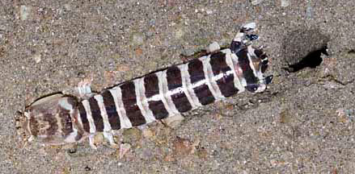
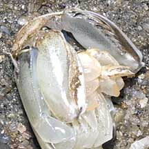
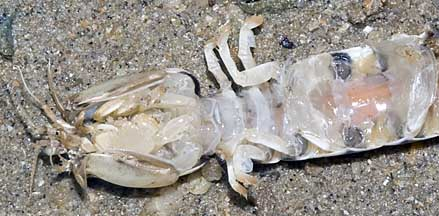
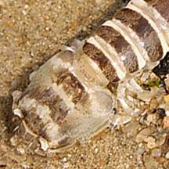

|
|
| mantis shrimps text index | photo index |
| Phylum Arthropoda > Subphylum Crustacea > Class Malacostraca > Order Stomatopoda |
| Banded
mantis shrimp Lysiosquilla sp. Family Lysiosquillidae updated Mar 2020 Where seen? This mantis shrimp is rarely seen. A pair was seen dead on Tanah Merah a day after the oil spill. One was seen in Changi. Features: 6-10cm long. Body broad and long, colour plain grey or beige with wide dark bars. The huge front pincers resemble those of the Praying mantis insect or the blade of a pocket knife that folds into the handle. Armed with sharp spines, the pincers extend and retract much faster than an eye blink and the sharp spines impale soft, fast-moving prey like fish and prawns. These shrimps are believed to live in monogamus pairs Status and threats: Our mantis shrimps are not listed as endangered. However, like other creatures of the intertidal zone, they are affected by human activities such as reclamation and pollution. |
 Tanah Merah, May 10 |
||
|
 Tanah Merah, May 10 |
 Tanah Merah, May 10 |
|
 |
| Banded mantis shrimps on Singapore shores |
On wildsingapore
flickr
|
| Other sightings on Singapore shores |
 Changi, May 10 |
||
|
Acknowledgements
|